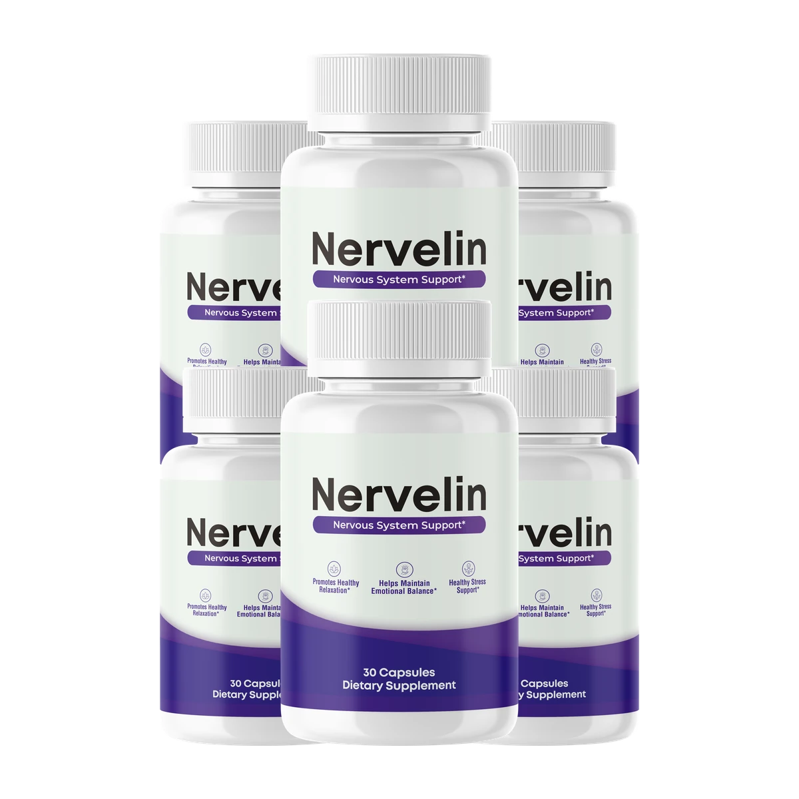
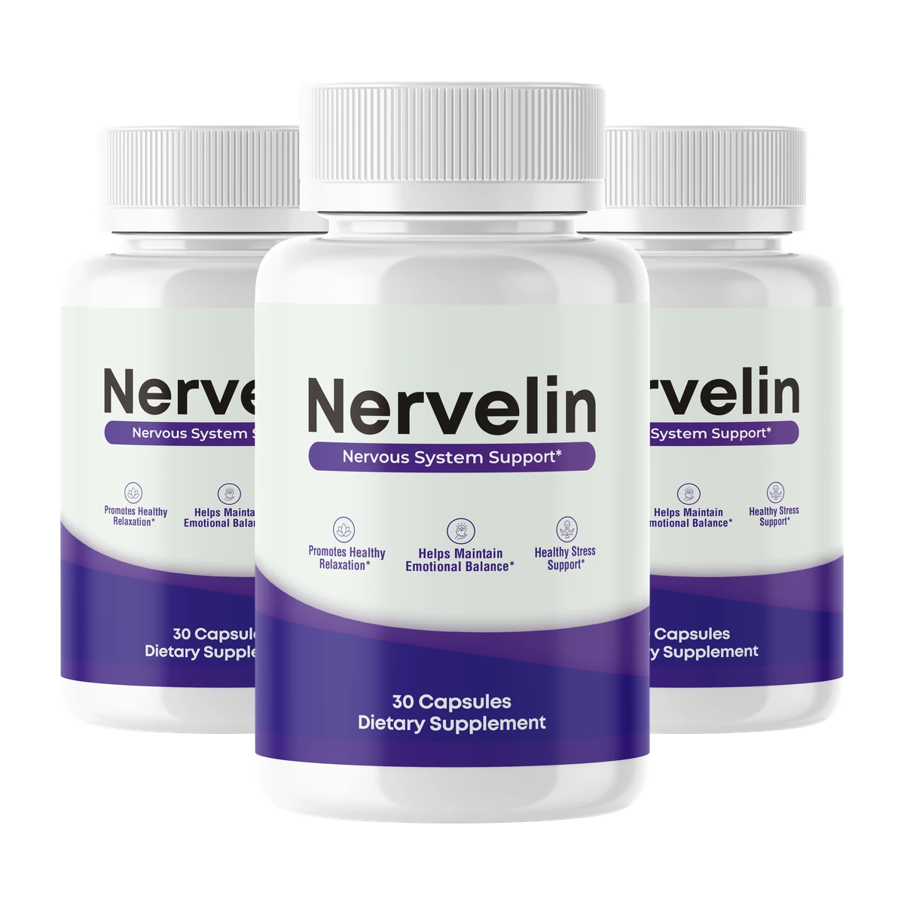
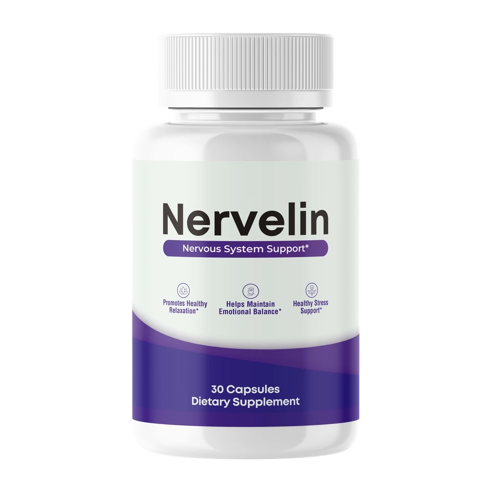

Nervelin is a once-daily nerve support formula designed to nourish the peripheral nerves in your hands, feet and legs — the long, delicate fibers that carry every sensation you feel. With B-vitamins and nerve-nourishing botanicals, Nervelin supports healthy nerve function, comfort and repair, so you can stop thinking about your feet and hands and get back to living.
Format: Once-daily powder scoop, mixed with water
Key Ingredients: B-Vitamins (B1, B6, B12, Folate), Baobab Fiber, L-Arabinose, Spermidine, Konjac Glucomannan, Vitamin D
Best For: Tingling, numbness, burning & shooting discomfort in hands & feet
Stimulants: None — stimulant-free, non-habit-forming
Guarantee: 60-day money-back guarantee

Nervelin®Peripheral nerves are the long fibers running to your hands and feet. When they're stressed or under-nourished, they misfire — and you feel it every day.
That prickling, electric sensation in your fingers or toes is often the first sign peripheral nerves are misfiring instead of signaling cleanly.
When nerve signaling slows, normal sensation fades — socks feel "too thick," buttons feel clumsy, and the ground feels different underfoot.
Burning, shooting or "restless" sensations often flare up at night, stealing sleep and leaving you drained the next day.

Nervelin is a once-daily nerve support powder, mixed into water, formulated around a simple idea: peripheral nerves need both the raw materials to repair themselves and relief from the metabolic stress that wears them down.
Sustained high blood sugar is one of the biggest stressors on peripheral nerves — excess glucose damages the tiny blood vessels and nerve fibers in the hands and feet. That's why Nervelin pairs fiber and botanicals that support healthy glucose metabolism (Baobab Fiber, L-Arabinose, Konjac Glucomannan) with the B-vitamins nerves use daily for repair and myelin maintenance, plus Spermidine for cellular renewal.
It is a dietary supplement, not a medication. It is not intended to diagnose, treat, cure or prevent diabetic neuropathy or any disease — it is nutritional support for nerve comfort and healthy nerve function as part of a balanced lifestyle.
Nerve comfort isn't a one-pathway problem, so Nervelin isn't a one-ingredient formula.
B-vitamins (B1, B6, B12 and folate) are the raw materials peripheral nerves use every day to maintain and repair themselves.
B12 and folate support the myelin coating around nerve fibers — the layer whose wear drives tingling and misfiring signals.
Nerves depend on steady micro-circulation to the hands and feet; the formula supports the blood flow and metabolic balance they rely on.
By supporting healthy glucose metabolism and cellular renewal (Spermidine), Nervelin helps reduce the metabolic stress that keeps nerves over-firing — including at night.
Nervelin addresses both sides of nerve discomfort: the supply side (the nutrients nerves need to repair and maintain myelin) and the stress side (the metabolic and circulatory load that wears nerves down). Consistency is what allows gradual support to build — which is why the 3- and 6-month packages exist.
A transparent look at how an inside-out nutritional approach compares to creams and single-ingredient capsules.
| Feature | Nervelin (Daily Scoop) | Topical Nerve Creams | Single-Ingredient B12 Caps |
|---|---|---|---|
| Works from the inside out | Surface only | ||
| Multi-nutrient nerve formula | B-vitamins + botanicals | Single nutrient | |
| Supports healthy blood sugar (a root stressor) | |||
| Supports circulation to extremities | Temporary | ||
| Convenient once-daily routine | One scoop | Messy, frequent | |
| Stimulant-free | |||
| Money-back guarantee | 60 days | Rarely | Rarely |
Every ingredient is included for a specific role in nerve comfort — not for a longer label.
The raw materials peripheral nerves use daily for maintenance, repair and myelin-sheath integrity. B1 (thiamine) and B12 are among the most studied nutrients in nerve health.
A natural fiber that supports healthy blood-sugar levels — important because sustained high glucose is one of the biggest metabolic stressors on peripheral nerves.
Supports healthy glucose metabolism, helping reduce the sugar spikes that stress nerve fibers and the tiny vessels that feed them.
Studied for its role in cellular renewal (autophagy) — the housekeeping process that helps cells, including nerve cells, maintain themselves over time.
A gentle soluble fiber supporting metabolic balance and steady circulation — two foundations healthy extremity nerves depend on.
A neuro-supportive vitamin linked in research to normal nerve function and neurological health, commonly low in people with nerve discomfort.
Worth knowing: always check the Supplement Facts panel on your own tub for the exact, current amounts — formulas can change, and the label is the only reliable source.
Supportive wellness benefits for healthy adults — not promised medical outcomes.
Soothes occasional shooting, burning or "electric" sensations in the hands and feet so daily life feels normal again.
Supports comfortable, normal sensation in the extremities — less "pins and needles," more feeling in control.
Feeds the protective myelin coating around nerve fibers so signals travel cleanly from limb to spine.
B-vitamins supply the raw materials nerves use to maintain and repair themselves every day.
Supports healthy micro-circulation to the hands and feet — the steady blood flow nerves rely on.
Calms over-active nerve signaling so you can fall — and stay — asleep without being woken by discomfort.
Illustrative, representative feedback based on typical customer experiences — not verbatim reviews. Individual results vary.
"The tingling in my feet used to flare up every evening while I watched TV. A few weeks into my first tub, those episodes got quieter and less frequent. It's become part of my morning without me thinking about it."
"I wanted something simple for the numbness in my fingertips, not another handful of capsules. One scoop in water after breakfast — that's it. My hands feel more 'present' during the day."
"The burning in my feet was worst at night and it was ruining my sleep. I didn't expect miracles, but by week three or four the night-time flares were far less intense. I sleep through most nights now."
Nerves repair slowly — the multi-tub packages exist to give the formula the runway it's designed for. Confirm exact current pricing at checkout.

Try it risk-free: every order is covered from the original purchase date for a full 60 days.
Not satisfied? Contact support within that window and they'll make it right — no complicated forms, no runaround.
Calendar your deadline the day your order arrives so you never lose track of the guarantee window.
Nervelin is a once-daily powder supplement formulated to support healthy peripheral nerve function and comfort — the nerves in your hands, feet and legs. It combines B-vitamins with fiber and botanicals that support the metabolic and circulatory foundations nerves depend on.
No. Nervelin is formulated for peripheral nerve health — the nerves in your hands, feet and legs — not for cognitive or brain performance. Every nutrient is chosen for nerve comfort, repair and function.
Healthy peripheral nerve function, comfortable sensation in the extremities, myelin-sheath integrity, and healthy circulation and glucose metabolism — the four pillars of everyday nerve comfort.
One scoop mixed into water once daily, ideally after your morning meal. Consistency matters more than timing — pair it with an existing habit so it becomes automatic. Always follow the label on your tub.
Nerves repair slowly, so there is no responsible universal timeline. Many users report the first few weeks are about habit-building, with gradual changes in comfort over one to three months — which is exactly why the 3- and 6-tub packages exist.
No. Nervelin is a dietary supplement, not a medication. It is not intended to diagnose, treat, cure or prevent diabetic neuropathy or any disease. If you have diabetes or a diagnosed nerve condition, work with your doctor and share any supplement you take.
Nervelin is stimulant-free and built from nutrients and fibers generally recognized for use in supplements. As with any new supplement, some people notice mild digestive adjustment at first. If you are pregnant, nursing, taking medication or managing a medical condition, speak with your healthcare provider first.
Every order is covered by a 60-day money-back guarantee from the original purchase date. If it isn't the right fit, contact support within that window for a straightforward refund.
These citations refer to research on the individual nutrients, not the finished Nervelin product.
Clinical literature on thiamine's role in peripheral nerve function and neuropathy support.
Research on B12's role in myelin maintenance and normal neurological function.
Studies linking vitamin D status to neurological and nerve health outcomes.
Trial evidence on folic acid with or without vitamin B12 for nerve and cognitive health in older adults.
Backed by a 60-day money-back guarantee. Confirm current terms on the official checkout page.
United States
A few moments ago